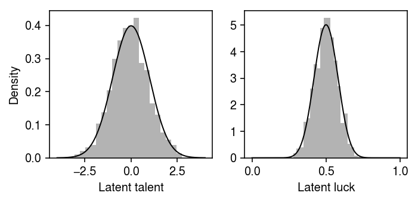
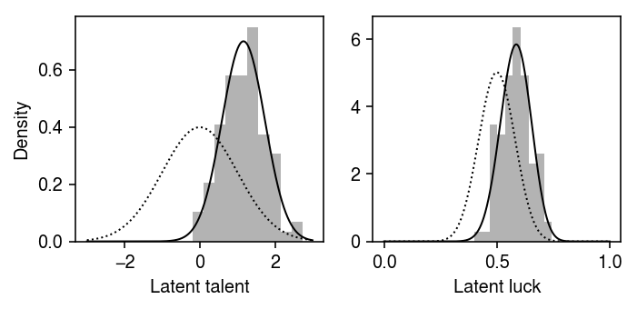

The role of randomness in success
Table of Contents
Introduction
Pluchino et al. 2018 investigate the disconnect between an assumed Gaussian distribution of ability, and the observed Pareto distribution of wealth. Specifically, they ask what sort of mechanism could cause an input distribution with a characteristic scale to lead to an output distribution which is scale-invariant. To analyze, they suggest a simple model over \(n\) agents and \(m\) life events:
- Each agent \(i = 1, \ldots, n\) has latent talent \(t_i\)
- Each agent has capital \(c_i(t)\), and all agents begin with equal \(c_i(0)\)
- Each event \(j = 1, \ldots, m\) is either lucky or unlucky, with \(\pi\) fraction of events being lucky
- Agents and events are spatially distributed on a 2d (toroidal) grid, leading to agent-specific distributions of lucky events over time (equivalently, \(\pi_i\) fractions of events are lucky for individual \(i\))
- If agent \(i\) and event \(j\) meet at time \(t\), and if \(j\) is lucky, then with probability \(t_i\), the agent's capital \(c_i(t) = 2 c_i(t - 1)\) (otherwise it is unchanged). If \(j\) is unlucky, then \(c_i(t) = c_i(t - 1) / 2\)
Here, we play with a simplification of this model.
Setup
import numpy as np import scipy.stats as st
%matplotlib inline %config InlineBackend.figure_formats = set(['retina'])
import matplotlib.pyplot as plt plt.rcParams['figure.facecolor'] = 'w' plt.rcParams['font.family'] = 'Nimbus Sans'
Results
Simplified model
Assume that latent talent follows a standard normal distribution, and assume that agent-specific luck (proportion of lucky events) follows a Beta distribution with mean 0.5.
np.random.seed(0) N = 1000 capital = np.ones(N) Ft = st.norm() Fl = st.beta(a=20, b=20) talent = Ft.rvs(size=N) luck = Fl.rvs(size=N)
Draw an example set of agents.
plt.clf() fig, ax = plt.subplots(1, 2) fig.set_size_inches(5, 2.5) grid = np.linspace(-4, 4, 1000) ax[0].hist(talent, bins=20, density=True, color='0.7') ax[0].plot(grid, Ft.pdf(grid), lw=1, c='k') ax[0].set_xlabel('Latent talent') ax[0].set_ylabel('Density') grid = np.linspace(0, 1, 1000) ax[1].hist(luck, bins=20, density=True, color='0.7') ax[1].plot(grid, Fl.pdf(grid), lw=1, c='k') ax[1].set_xlabel('Latent luck') fig.tight_layout()

Suppose we measure time in years, and consider a lifetime, say \(t=80\). Assume an exponential waiting time between events; then, the number of events in a lifetime is Poisson distributed.
def simulate(N=1000, a=20, b=20, wait_time=0.05, t_max=80, seed=0): np.random.seed(seed) capital = np.ones(N) talent = st.norm().rvs(size=N) Fl = st.beta(a=20, b=20) luck = Fl.rvs(size=N) Fw = st.expon(scale=1 / wait_time) trace = [] t = 0 while t < t_max: wait = 1 / Fw.rvs(size=N) t += np.min(wait) target = np.argmin(wait) lucky = np.random.uniform() < luck[target] success = np.random.uniform() < Ft.cdf(talent[target]) if lucky and success: capital[target] *= 2 elif not lucky: capital[target] /= 2 trace.append((t, capital)) return talent, luck, capital
Draw from the simulation.
talent, luck, capital = simulate(N=1000, wait_time=0.1)
Look at the final distribution of capital.
plt.clf() fig, ax = plt.subplots(1, 4) fig.set_size_inches(8, 2) ax[0].hist(capital, bins=20, color='0.7') ax[0].set_xlabel('Capital') ax[0].set_ylabel('Number of individuals') ax[1].set_yscale('log') ax[1].scatter(talent, capital, s=4, c='k', alpha=0.2) ax[1].set_xlabel('Latent talent') ax[1].set_ylabel('Capital') ax[2].set_yscale('log') ax[2].scatter(luck, capital, s=4, c='k', alpha=0.2) ax[2].set_xlabel('Latent luck') ax[2].set_ylabel('Capital') ax[3].scatter(luck, talent, s=4, c='k', alpha=0.2) ax[3].set_xlabel('Latent luck') ax[3].set_ylabel('Latent talent') fig.tight_layout()

Now, take 100 draws from the simulation.
n_trials = 100 talents = [] lucks = [] capitals = [] for t in range(n_trials): t, l, c = simulate(N=1000, wait_time=0.1, seed=t) talents.append(t) lucks.append(l) capitals.append(c)
Look at the distributions of luck and talent of the wealthiest individual, compared to the population distributions.
talent_max = np.array([t[np.argmax(c)] for t, c in zip(talents, capitals)]) luck_max = np.array([l[np.argmax(c)] for l, c in zip(lucks, capitals)])
import scipy.optimize as so def beta_nll(theta, x): return -st.beta(a=np.exp(theta[0]), b=np.exp(theta[1])).logpdf(x).sum() opt = so.minimize(beta_nll, x0=np.zeros(2), args=(luck_max,), method='L-BFGS-B') opt
fun: -127.9427851349254 hess_inv: <2x2 LbfgsInvHessProduct with dtype=float64> jac: array([4.54747351e-05, 7.53175300e-05]) message: b'CONVERGENCE: REL_REDUCTION_OF_F_<=_FACTR*EPSMCH' nfev: 51 nit: 10 status: 0 success: True x: array([3.42174158, 3.0879293 ])
plt.clf() fig, ax = plt.subplots(1, 2) fig.set_size_inches(5, 2.5) grid = np.linspace(-3, 3, 1000) ax[0].hist(talent_max, bins=10, density=True, color='0.7') ax[0].plot(grid, st.norm().pdf(grid), color='k', lw=1, ls=':') ax[0].plot(grid, st.norm(loc=talent_max.mean(), scale=talent_max.std()).pdf(grid), color='k', lw=1) ax[0].set_xlabel('Latent talent') ax[0].set_ylabel('Density') grid = np.linspace(0, 1, 1000) ax[1].hist(luck_max, bins=10, density=True, color='0.7') ax[1].plot(grid, st.beta(a=20, b=20).pdf(grid), color='k', lw=1, ls=':') ax[1].plot(grid, st.beta(*np.exp(opt.x)).pdf(grid), color='k', lw=1) ax[1].set_xlabel('Latent luck') fig.tight_layout()

Estimate the average quantile of talent for the most successful individual.
st.norm.cdf(talent_max.mean())
0.8774647656061401
Estimate the average quantile of luck for the most successful individual.
F_lm = st.beta(*np.exp(opt.x))
st.beta(a=20, b=20).cdf(F_lm.mean())
0.8523639432276193